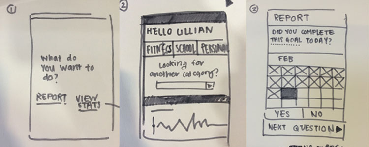

Paper prototypes
This the first paper prototype rendition. We began sketching by doing a speed sketch for five minutes and then some user testing for another five minutes. My partner was able to understand that there were two options branching from the home screen, one for reporting and one for viewing stats. SShe commented on how having all stats on one page could potentially become cluttered.
Check back for prototype 2!